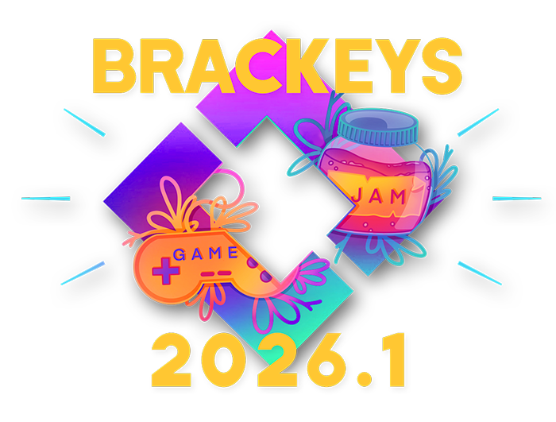
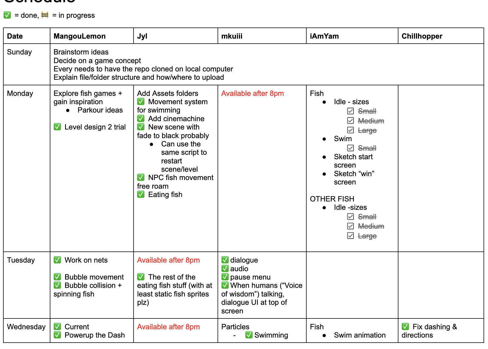
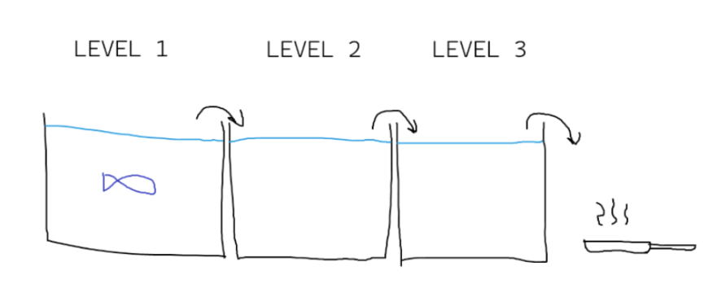
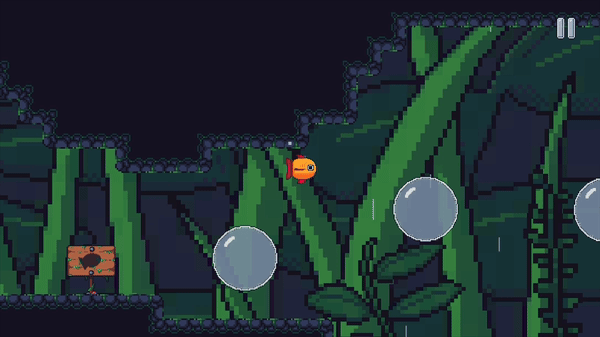
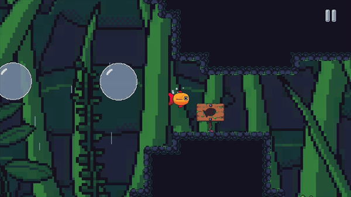
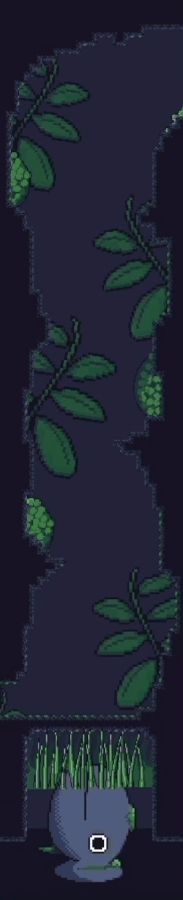
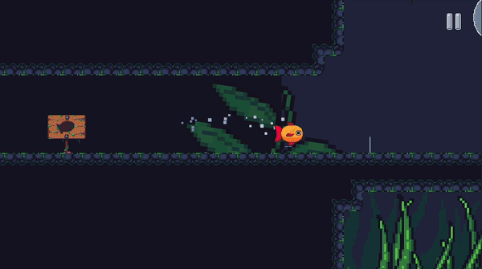

JC
JC

Gloomy Day Clean Up
Creating a simulation game that involves organizing and cleaning a messy room

To avoid spoilers, please experience the game first!:)
Game Designer
Level Designer
Game Developer
User Testing
Chillhopper
iAmYam
Jyl
mkuiii
Game Jam
1 Week
February 2026
Unity 3D
Github
Procreate
C#
is a one week game project following a young, ambitious fish who learns about a legend from a mysterious voice that those who overcome three trials can ascend into a dragon.
This is made for the Brackey’s Game Jam 2026.1 with the theme, Strange Places.
is an online bi-annual game development competition open to participants of all experience levels. It is hosted on Itch.io.

Brackey’s Game Jam 2026.1 Game Jam Art
IDEATION

To Do List
One concept I proposed was about a fish traveling through a dried forest using floating bubbles and solving puzzles to restore the water. This evolved into a narrative inspired by a legend of a fish ascending into a dragon after climbing a waterfall, leading to the idea that a fish (the player) must go through three trials to become a dragon.
We then iterated on the idea together, delegated tasks, kept a to-do list in a shared document, and communicated through Discord.
LEVEL DESIGNING
We decided that the game would have 3 trials, each taking place in a different world and representing a specific attribute.
The trials are separated by a cutscene where the fish jumps into the next level.

Trial Transition Concept Sketch by Chillhopper
LEVEL DESIGNING
I was in charge of trial 2. I defined the mechanics, controls, obstacles, and the core gameplay loop. I sketched out the potential layout and structure of the level.
LEVEL DESIGNING
Trial 2 has 5 stages, which I planned with Chillhopper. All the stage sketches were drawn by Chillhopper.
CODING
I used placeholder art assets to test out the scripts. I first created the swaying net movement for Trial 3 using the Mathf.Sin method.
Building on this system, I reused the net movement code and adjusted the amplitude and frequency to create a floating bubble effect. I also used this for the pufferfish obstacle movement.
For both falling obstacles and moving bubbles, I made it so horizontal and vertical values can be adjusted to control the direction it's moving.
Handling Collisions

Bubble Mechanic
I worked on the bubble collision mechanic, where the fish spins when colliding with a bubble and the player can control its direction using the movement keys.
To create a water current effect that pushes the player, I used Unity’s Area Effector to apply force. This affects the fish using force magnitude and variation.
I also implemented checkpoints so that when the player hits an obstacle, they respawn at the most recently reached checkpoint. Once a checkpoint has been activated, it cannot be used again.

Water Current Mechanic

Checkpoints
Collisions
In the last section, I set up a trigger areathat activates the boss fish to move upward to a fixed position. When colliding with the boss fish, the player respawns at the last checkpoint and the boss fish returns to its initial position.
I also implemented a screen shake using Unity's Cinemachine’s impulse listener and impulse source to create a shockwave effect. This produces small earthquake-like impulses to create a sense of urgency.

Boss Fish

Earthquake-like Impulses
After creating the Trial 2 scene, I built out the level with Chillhopper. I used a rule tileset and referred to the level design sketches. I imported the final art assets and the animations. I also playtested the full game multiple times to check for and decode bugs.
Try Carp Diem to experience the full narrative and all the levels/trials!I learned more about how to code in C#, including setting up checkpoints and collisions, using Unity effects like the Area Effector and Cinemachine system, and using rule tilesets to build the environment. This experience helped me practice identifying and debugging bugs.
I would like to conduct playtesting sessions to gather feedback and identify areas to refine and improve. I would also add a background for the third trial, which was not included in the Itch.io version due to time constraints. Additionally, I want to improve my coding organization.
Developing a VR journey about breaking free of self-doubt and rediscovering confidence and potential